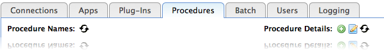
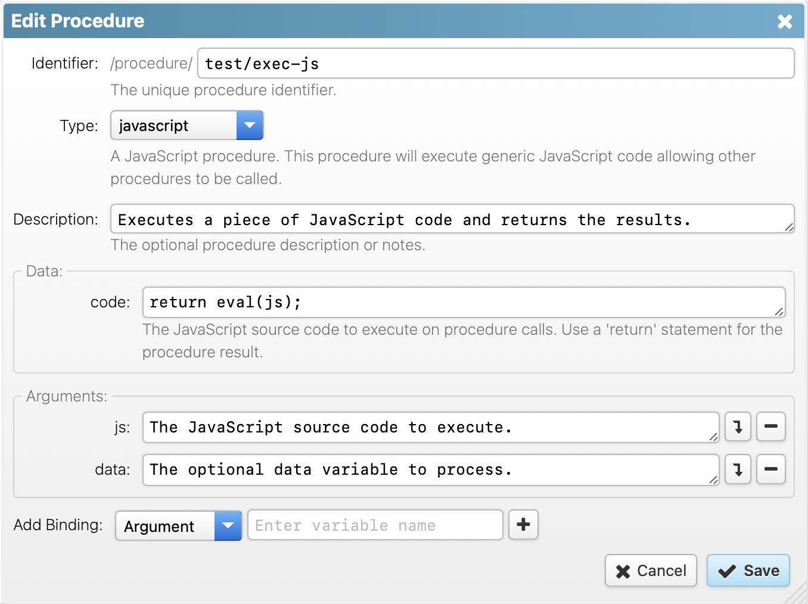

RapidContext
Access > Discovery > Insight
www.rapidcontext.com
All RapidContext server functionality is provided by plug-ins. The plug-ins are distributed as ZIP files named [plugin identifier]-[version].plugin and contain an internal directory structure like this (mirroring the overall storage structure):
| app/ | App configuration files |
| connection/ | Connection configuration files |
| environment/ | Environment configuration files |
| files/ | Contains files to serve via HTTP (maps directly to URL:s) |
| lib/ | Java JAR libraries to load (server-side) |
| procedure/ | Procedure configuration files |
| role/ | Role configuration files |
| user/ | User configuration files |
| plugin.properties | The plug-in configuration file (mandatory, see below) |
The directories are names according to the type of objects contained. The exceptions being files/ and lib/ that are handled in a special way. The files/ directory contains all the JavaScript code and images available for web browsers.
Each plug-in must contain a plugin.properties configuration file. It is the only mandatory content of a plug-in and consists of the following fields:
The plug-in configuration is the first file to write when developing a plug-in. An example plugin.properties file is shown below:
# General properties
id = example
name = Example Plug-in
version = 1.0
date =
description = Provides tests and examples for the platform.
className = org.rapidcontext.app.plugin.example.ExamplePlugin
Once the plugin.properties file has been created, the Ant script in plugin-build.xml can be used for packaging the plug-in.
Server-side operations can be added by creating procedures. Procedures can be invoked from the client or from other procedures and may take arguments, modify data and/or return values.
Each procedure has a specific type (or kind). The procedure type defines which Java code is used to execute the procedure, similar to a templating engine. Since most server-side operations are very similar, only a few different procedure types are needed. The built-in and standard plug-in procedure types are listed below, but more can be added by installing additional plug-ins.
Using the Admin app, it is easy to create or edit
procedures of any type (except built-in). The screenshot below
shows the location of the +
icon for adding a new procedure. Just next
to it is the edit icon.

After clicking the add or edit icon, the following dialog is shown:

Each procedure can have a number of custom configuration properties that control their execution. A property has one of four types, each with different semantics and expected values:
Procedures created or edited are stored to the procedure/ directory inside the local plug-in. The files there can be copied to the corresponding plug-in development directory for packaging.
The javascript procedure type allows creating generic server-side logic with minimum effort. The procedure consists of JavaScript code, which is compiled upon the first call. Additional procedure properties are exposed as variables in the global scope and can be accessed or called directly.
The JavaScript environment provided is compatible with EcmaScript 5.1 and allows the creation of helper functions and comments to keep the code readable. See the example below for a JavaScript procedure that calls another procedure and filters its result:
// Helper: Check if server thread has context function hasContext(thread) { return thread.context != null; } // Helper: Extract procedure name from server thread context function getProcName(thread) { return thread.context.procedure; } // Using property bound to 'System.Thread.List' procedure var threads = listThreads(); // Filter threads and extract procedure names, return threads.filter(hasContext).map(getProcName);
JavaScript procedures is a powerful tool for post-processing data in various situations. It is also often easier and more efficient to put this type of functionality into a procedure, than to perform it in the web browser. Especially when the data set is large or when many separate queries are required. Here are a number of recommended uses for JavaScript procedures:
A few additional tips to consider when developing JavaScript procedures:
Loggingtab in the Admin app for controlling this.